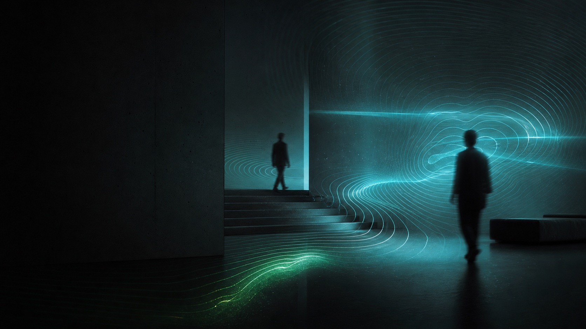

Reading a Room With Wi-Fi
Every space with Wi-Fi already has a motion sensor running - it just hasn't been switched on. Here's how the same radios that carry your traffic can sense where people are and how they move, with no cameras and nothing to wear.

Walk into almost any modern room and there's already a dense field of radio energy filling it - Wi-Fi, bouncing off the walls, the floor, the furniture, and you. We treat that field as plumbing: a pipe for data. But the same physics that makes Wi-Fi work also makes it a sensor, because the one thing that reliably disturbs a radio field is a body moving through it.
I build environments that respond to what's happening inside them, and the hardest part is almost never the response - it's the sensing. How does a room know someone walked in? That a class just got intense? That a corner is empty? The obvious answer is cameras, and the obvious answer is wrong for most of the spaces I care about. So I went looking for a sensor that was already installed everywhere, that nobody had to wear, and that nobody would object to. It turned out to be the Wi-Fi.
The signal you're already ignoring
When a Wi-Fi radio sends a packet, the receiver has to measure exactly how the signal arrived - how much it was delayed, attenuated, and phase-shifted on each of its subcarrier frequencies - just to decode the data correctly. That measurement is called channel-state information, or CSI. Every Wi-Fi link computes it constantly. It's the radio's picture of the room between the two antennas.
Here's the key: that picture changes the instant anything in the room moves. The signal doesn't travel in a single straight line - it takes dozens of paths, reflecting off every surface, and all of those copies recombine at the receiver. Move a hand through one of those paths and you change the sum. The data still decodes fine; you'd never notice. But the CSI shifts measurably. The room's furniture, walls, and bodies are all written into that measurement - and the moving parts stand out from the still ones.
A still room produces a steady channel. A body moving through it writes a signature. Sensing is just learning to read the difference.
So the technique is, at its core, simple: capture CSI many times a second, watch how much it's changing from one moment to the next, and turn that into a single number - a motion-energy score. Flat line, empty room. Rising, someone's active. It's the same live value you'll see ticking on the home page of this site, pulled straight off a radio.
What it costs: about twelve dollars
The thing that makes this practical rather than academic is that you don't need exotic hardware. A common ESP32 microcontroller - a few dollars, the size of a stick of gum - can expose raw CSI from its Wi-Fi radio. Drop a couple of them into a space, point them at each other or at the existing access point, and you have a sensing layer for the price of a sandwich.
And this isn't a fringe hack anymore. The IEEE has an entire task group - 802.11bf - formalizing Wi-Fi sensing as a first-class feature of the standard, so future access points will expose this capability natively. The hobbyist version I prototype with today is the early edge of something that's about to be built into the infrastructure everywhere.
Why not just use a camera?
Because the camera is the wrong tool for the rooms I work in, on almost every axis that matters:
- Privacy. A camera records identifiable people. CSI is a single fluctuating number - it can tell you that the room is active and roughly where, but it has no face, no image, nothing to leak or subpoena. For a wellness space, a clinic, a home, or anywhere people expect not to be filmed, that distinction is the whole game.
- Darkness. Half the spaces I build for are deliberately dim - a dark studio, a stage, a lounge. Radio doesn't care about light. It works in pitch black exactly as well as in daylight.
- Coverage. Radio passes through partitions and around corners. One link can sense a volume a camera would need several angles to cover, with no blind spots behind the equipment.
- Friction. Nobody installs an app, charges a wearable, or stands in the right spot. The sensing is ambient. People just exist in the room and the room already knows.
I want to be honest about the trade, though, because that's the difference between an engineer and a salesman. CSI sensing is coarse. It is fantastic at "is there motion, how much, roughly where" and it does not give you a skeleton, an identity, or a precise count of people. It drifts as the room's furniture changes and usually wants a short re-baseline. It is a presence-and-energy sensor, not a measuring tape. The skill is using it for exactly what it's good at - and reaching for vision only when you genuinely need to see.
What you do with a number that means "the room is alive"
Once a space can emit a clean motion-energy signal, it becomes an input you can wire into anything:
- Reactive light and visuals that swell with the room's energy instead of running on a fixed timeline.
- Presence-aware infrastructure - screens, audio, and HVAC that wake on real occupancy and stand down when a zone is genuinely empty, not on a dumb timer.
- Operational signal - anonymous, aggregate occupancy and activity patterns across a space, with no one identified.
- A trigger layer for experiences that should only fire when someone is actually there to witness them.
None of that requires a camera in the ceiling. It requires reading a signal the building was already broadcasting.
The principle: the room is already instrumented
Wi-Fi sensing is the clearest example of an idea that runs under everything I build: the most elegant sensor is usually one that's already in the room, doing another job. Before you add hardware, ask what the space is already emitting - the radio field, the sound, the power draw, the network traffic - and whether you can read responsiveness out of that instead of bolting on more.
The best sensor is the one that's already installed. You don't add it to the room - you notice it's been there all along.
A camera-free room that still knows when it's alive isn't a compromise. It's a better-designed system - cheaper, more private, more robust, and invisible to the people inside it. That's what responsive environments should feel like: the room reacts, and you never see the wiring.
Want a space that senses without watching?
I design responsive environments and the sensing layers underneath them - camera-free where it counts. Let's talk about yours.
Start a conversation →